Übung 2.1 - Polygonal Modeling
Der Edit-Mode
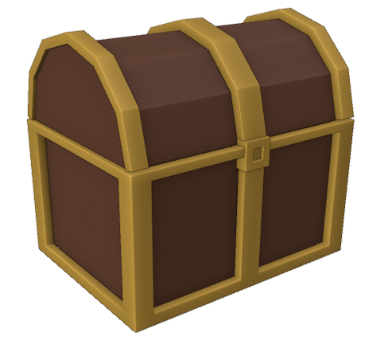
Im folgenden Kapitel werden die Grundlagen des Modellierens erläutert. Dazu erstellen wir eine Schatztruhe.
1. Vorbereitung
- Erstellt ein neues Blender-File.
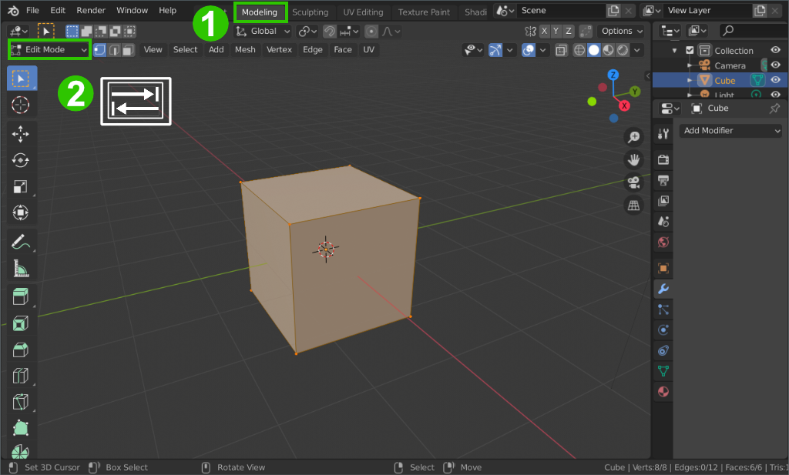
-
Wechselt jetzt ins Modeling Workspace 1.
-
Beim Wechsel zum Modeling Workspace wird bereits automatisch der Edit Mode aktiviert. Um zwischen Edit Mode und Object Mode zu wechseln könnt ihr das Interaction Mode Menu 2 oder den Shortcut
Tabnutzen.
Im Editmode kann nun die tatsächliche Geometrie von Objekten verändert werden
2. Grundform
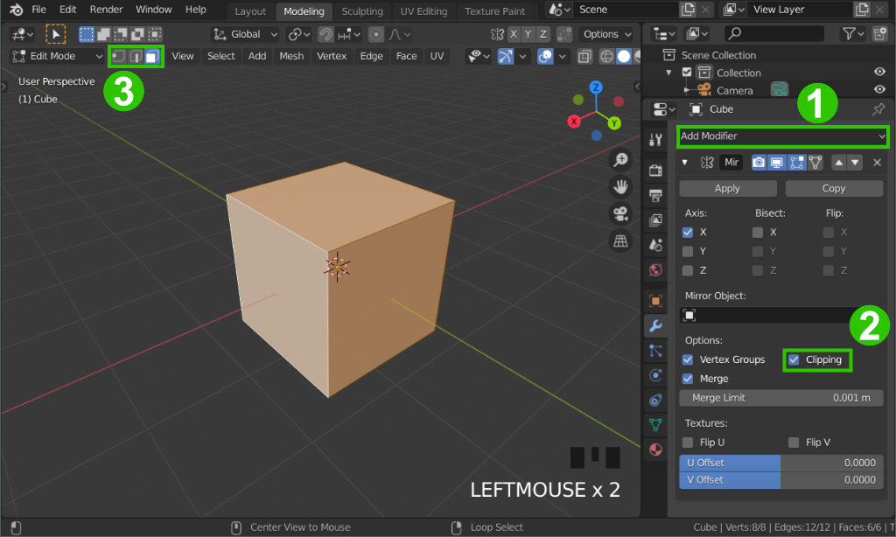
Zunächst wollen wir die Grundform der Truhe erstellen. Da die Truhe symmetrisch wird, können wir hier einen Mirror Modifier verwenden, um uns die Modellierung einer Seite zu sparen.
Mit einem Mirror Modifier zu arbeiten bietet sich bei allen symmetrischen Objekten an, da es die Häfte der Arbeit erspart. Selbst wenn nur die Grundform symmetrisch ist kann man Details später immer noch für die Seiten individuell anpassen.
-
Fügt dem Würfel einen Mirror Modifier hinzu 1 und aktiviert Clipping in dessen Optionen 2.
-
Wechselt zum Face Selection Mode 3. Nun könnt ihr statt der einzelnen Vertices (Eckpunkte) ganze Polygone/Faces auswählen
Zwischen Vertex, Edge und Face Selection Mode kann auch schnell mit den Tasten
123umgeschaltet werden.
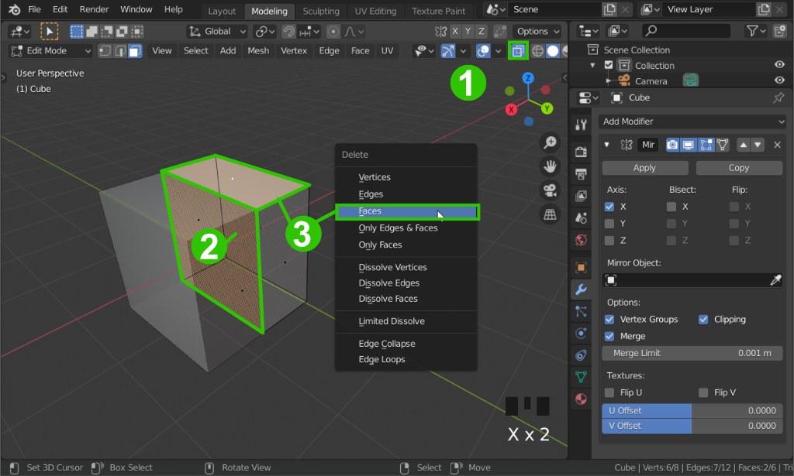
-
Schaltet X-Ray an 1. So werden alle Polygone eures Meshes - auch im inneren oder hinten liegende - sichtbar.
-
selektiert nun vorerst ein Polygon auf der Seite des Würfels, die in Richtung der roten X-Achse zeigt 2 .
-
Bewegt das Polygon nun auf der X-Achse bis zur Mitte des Meshes (dort wird es vom Mirror Modifier automatisch gestoppt.)
-
Selektiert nun zusätzlich noch das Polygon oben und löscht mit
Xdie selektierten Faces
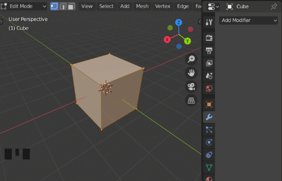
Hier im Blender Manual werden die Unterschiede der Optionen im Delete Menü erklärt.
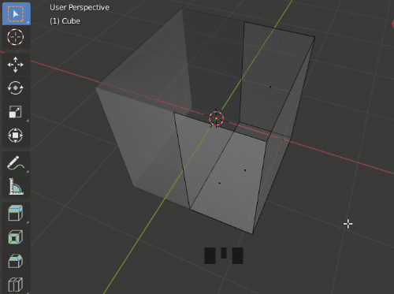
-
markiert nun alles mit
A -
Drückt
Eum die Geometrie zu extrudieren. Drückt sofortRechtsklinkum die Geometrie an der selben Stelle zu lassen. -
Skaliert nun die Geometrie auf der blauen Z-Ebene um der Truhe Dicke zu verleihen.
-
Selektiert den Boden der Kiste (zweimal klicken falls zuerst das falsche Polygon selektiert wird) und bewegt das Polygon auf der Z-Achse nach oben, um dem Boden Dicke zu verleihen.
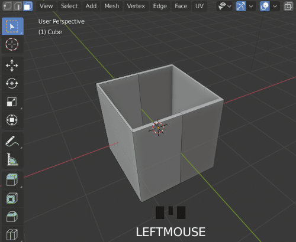
- Schiebt nun die Vertices der Truhe umher, um eine quaderförmige Form zu erhalten. Benutzt dazu die bisher gelernten Selektionsmodi und das Verschieben-Werkzeug (Shortcut
G).
2.2 Normalen
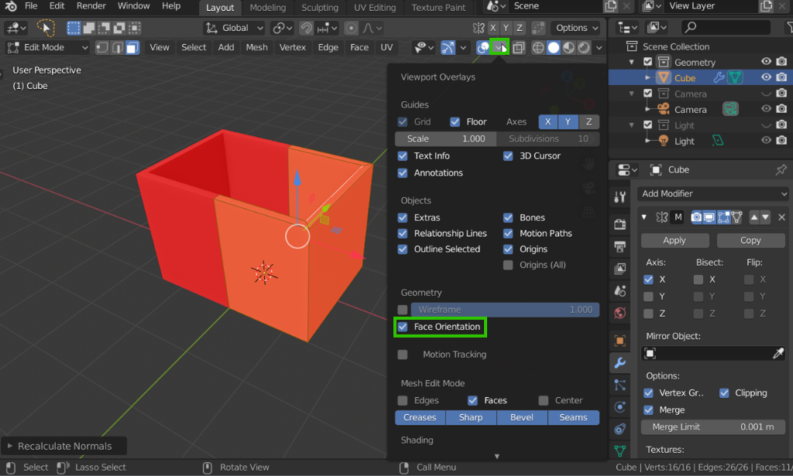
- Da wir Geometrie nach innen extrudiert haben, sind nun die Normalen des Meshes verkehrtherum. Das kann man sehen, indem im Overlays Menü → Face Orientation eingeschaltet wird. Alle rot dargestellten Polygone haben Normalen, die von der Kamera weg zeigen. idealerweise sollte also nur blau zu sehen sein.
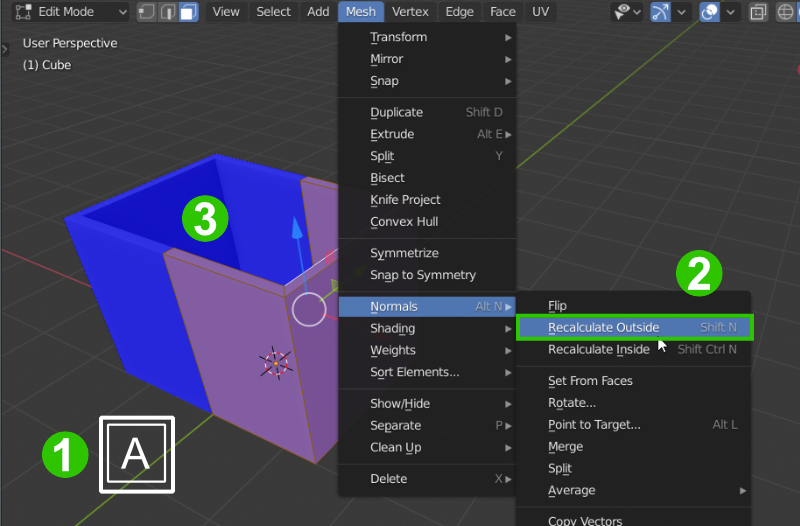
-
Um das zu erreichen, wählt das gesamte Mesh im Editmode mit
Aaus 1 und wählt Mesh → Normals → Recalculate Outside 2 -
Nun sollte das gesamte Mesh blau dargestellt werden 3.
Die Ausrichtung der Normalen wird später noch wichtig, z.b. für Modifier, Beleuchtung und Physics. Überprüft generell ab und zu die Ausrichtung der Normalen mit dem Face Orientation Overlay.
3. Rahmen
Nun wollen wir eine eiserne Einfassung für unsere Kiste erstellen.
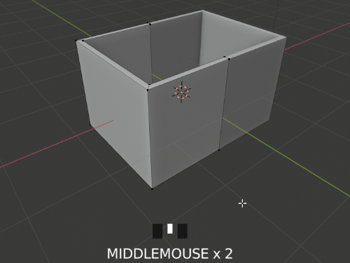
-
Fügt mit
Ctrl + Reinen neuen Loop Cut an der Seite der Kiste hinzu. Direkt darauf könnt ihr ihn mit der Maus an die richtige Stelle schieben (siehe Gif). -
Wiederholt diesen Schritt für alle Stellen, an denen eine Kante der Einfassung sein soll (hier grün markiert):
-
Mit dem Mausrad könnt ihr nach drücken von
Ctrl + Rdie Anzahl von zu platzierenden Loop Cuts einstellen.
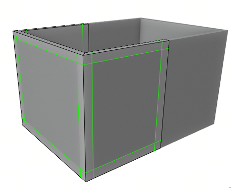
Loop Cuts teilen das geasamte Mesh und funktionieren wie die meisten Bearbeitungsfuntionen nur gut mit Quadrangles bzw. Quads (Vierecken). Meshes aus Triangles bzw. Tris (Dreiecken) und/oder N-Gons (Vielecken) haben bei der Bearbeitung meist unerwartete und ungewollte Effekte. Loop Cuts werden beispielsweise durch Tris unterbrochen und erstellen Kanten, die sich theoretisch als Viereck gegenüberstehen, tatsächlich aber immernoch ein Dreieck mit einer unterbrochenen Kante bilden.
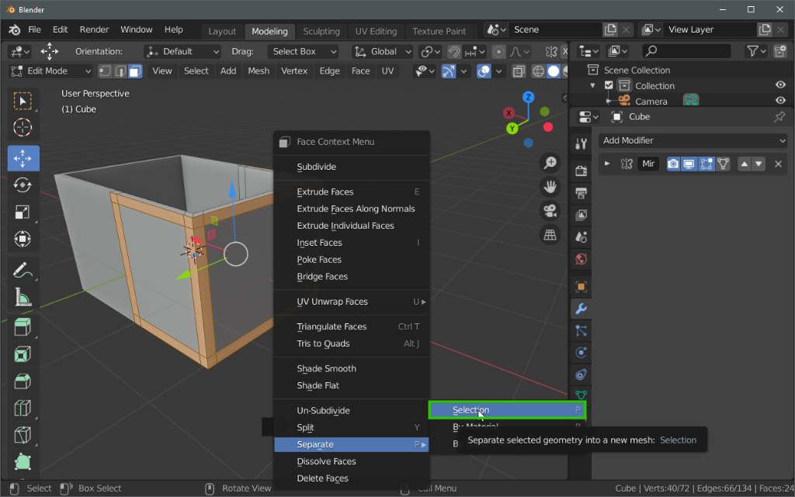
- Separiert die nun entstandenen Teile des Rahmens zu einem neuen Objekt, indem ihr die selektiert und
Rechtsklick → Separate → Selectionklickt.
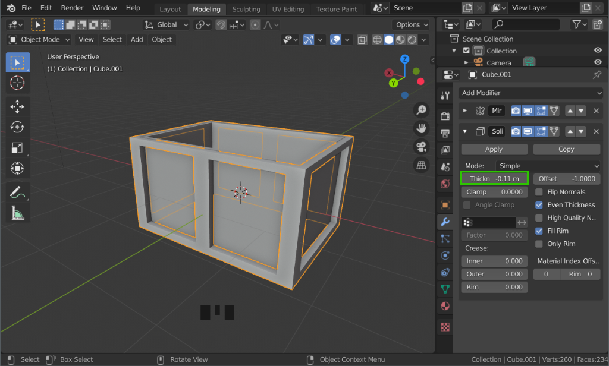
-
Wähle nun im Objectmode das neu entstandenen Rahmenobjekt aus.
-
Füge ihm einen Solidify Modifier hinzu und stelle den Thickness Wert ein, bis der Rahmen Dick genug ist. Hier werden negative Werte benötigt, da der Modifier Objekte standardmäßig nach innen (entgegen der Normalenrichtung) verdickt.
-
Aktiviert eventuell Even Thickness falls der Rahmen unregelmäßig aussieht.
4. Deckel
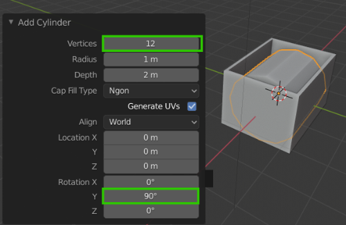
- Fügt nun im Object Mode einen neuen Cylinder hinzu. Stellt sofort im Menü unten links 12 Vertices für die Auflösung und 90° für die Rotation auf der Y-Achse ein
Wenn die anderen Objekte im Viewport stören, kann der Local Mode mit
Numpad /oder über View → Local View → Toggle Local View eingestellt werden.
-
Bei Bedarf kann auch hier wieder ein Mirror Modifier verwendet werden.
-
Selektiert die Vertices des liegenden Zylinders der unteren Hälfte (abgerundet) und löscht diese.
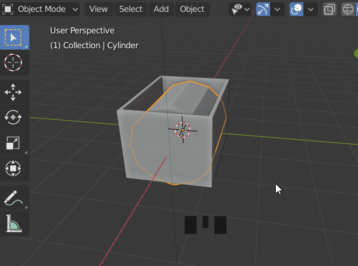
- Füllt dann die entstandenen Löcher auf, indem ihr je auf einer Seite den Halbkreis an Vertices selektiert und
F(Fill) drückt.
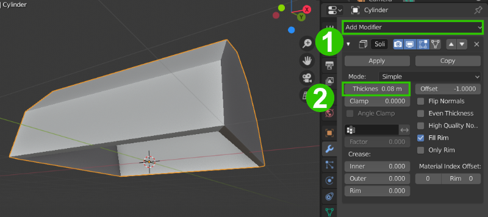
-
Hier verwenden wir nun einen Solidify Modifier 1, um dem Deckel Dicke zu verleihen. Fügt diesen hinzu und stellt die Dicke (Thickness) entsprechend ein 2. Diesesmal nehmen wir einen Positiven Wert, da der Deckel nach innen verdickt werden soll.
-
Skaliert und verschiebt nun den Deckel nun, so dass er auf die Kiste passt.
-
Nutzt die in 2 erklärte Methode, um auch dem Deckel einen Rahmen zu geben (siehe Video)
-
Da der Deckel schon einen Solidify Modifier hat, wird auch das abgespaltete Rahmenobjekt schon einen haben. Stellt bei diesem einfach die Dicke auf einen negativen Wert, damit der Rahmen nach außen dick wird.
Zusammenhängende “Ringe” (Loops) von Polygonen oder Edges können mit gedrückter
AltTaste selektiert werden, indem auf eine Kante zwischen zwei Segmenten des “Rings” geklickt wird.
5. Schloss
Schlussendlich wollen wir nun noch ein einfaches Schloss für unsere Truhe erstellen.
- Fügt dazu im Objectmode ein einfaches Add → Mesh → Cube Objekt hinzu und verschiebt und skaliert ihn an die Stelle, an der das Schloss sein soll.

-
Wechselt mit
Tabzum Editmode -
Nutzt das inset Tool oder den Shortcut
i, um das vordere Polygon des Würfels “einzurücken”. -
Nutzt das Extrude Tool oder wieder den Shortcut
È, um nun ein Loch im Würfel zu erzeugen. -
Oder alternativ !FREIWILLIG!: Modelliert eine “Ausstanzform” für ein Schlüsselloch und recherchiert den sogen. Boolean Modifier, um ein schlüsselförmiges Loch zu erzeugen.
6. FREIWILLIG: Details
- Fügt der Truhe weitere Details hinzu
- Nutzt zum Beispiel den Bevel Modifier, um die Kanten des Rahmens abzurunden.
Aufgabe
- Modelliert die Truhe wie beschrieben.
- Die Abgabe besteht aus der .blend Datei, sowie einem Screenshot der Truhe.
Ressourcen & Tutorials zum Thema
| Art/Länge | Titel | Thema | Quelle |
|---|---|---|---|
| 1:15 | Modeling Introduction - Blender 2.80 Fundamentals | Modeling | YouTube - Blender (offizieller Kanal) |
| 3:07 | Object and Edit Mode - Blender 2.80 Fundamentals | Interface & Basics | YouTube - Blender (offizieller Kanal) |
| 13:18 | Beginner Blender Tutorial Level 1 - Part 2: Modelling | Modeling | YouTube - Blenderguru |
| 21:55 | Blender 2.8 Beginner Tutorial - Part 4: Hard-Surface Modeling | Modeling | YouTube - CG Boost |
| Editing - Blender Manual | Mesh Tools | Blender Reference Manual |
Gelerntes
| Funktion | Kontext | Shortcut |
|---|---|---|
| Modus wechseln | Edit Mode / Object Mode | Tab |
| Loop Cut and Slide | Edit Mode | Ctrl + R |
| Inset | Edit Mode | I |
| Extrude | Edit Mode | E |
| Bevel | Edit Mode | Strg + B |
| Detatch | Edit Mode | P |